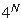

Los modelos bidimensionales inventados por Ken Dill (Moreno-Hernandez & Levitt, 2012; Dill et al., 1995), usando un alfabeto reducido donde los
aminoácidos son polares (P) o hidrofóbicos (H) y donde las cadenas se pliegan en una malla bidimensional, sirvieron
originalmente para aproximarse al plegamiento de una forma simplificada. En general se acepta que estos
modelos reproducen las características más importantes del proceso de plegamiento real con la ventaja
de ser más manejables:
- se forman estructuras secundarias, que limitan la velocidad del proceso
- el plegamiento se hace por etapas y está dominado por la hidrofobicidad
Vamos a definir más formalmente este modelo, porque ilustra de forma sencilla los algoritmos de dinámica molecular
que mencionaremos en la siguiente sección:
- dado el alfabeto {H,P}, una proteína es una secuencia de longitud N,
tal como HHHPPPHHPPPPPHHHPPPPHHH.
- las proteínas viven en una malla bidimensional, como la de la figura 2.6, donde cada posición no
puede estar ocupada por más de un residuo.
- cada celda de la malla tiene 4 vecinos: N, S, E y O.
- cada residuo está dado en coordenadas internas empezando por el extremo, por ejemplo el residuo 2 está al N del 1.
- hay por lo tanto un máximo de  conformaciones posibles.
- no se admiten cruces en la secuencia.
- cuando dos residuos no contiguos en secuencia ocupan celdas vecinas se dice que interaccionan.
- la energía de cada interacción se evalúa usando la matriz de la tabla 2.2.
- la conformación nativa es aquella que minimiza la energía total, maximizando la estabilidad en solución.
Tabla 2.2:
Matriz de interacción  en un modelo HP
en un modelo HP
|
|
PDF
Bruno Contreras-Moreira
http://www.eead.csic.es/compbio